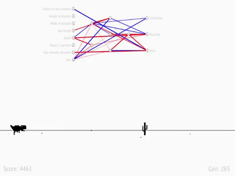

A Clone of the famous arcade game Chrome-offline Dino Game and implimentation of Neural Evolutionary Augmenting Topology (NEAT). It at first releases 100 species in the game and the fittest species traits are passed on to the next generation helping the traits getting better with after each generation.